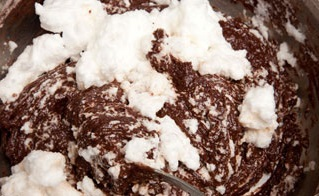
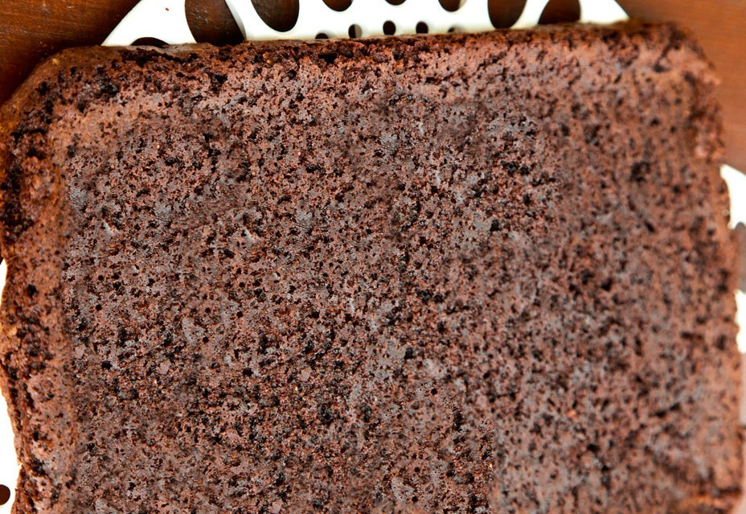
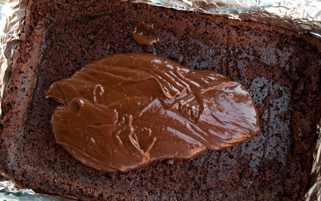
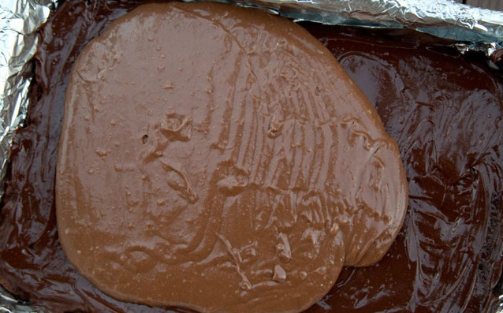
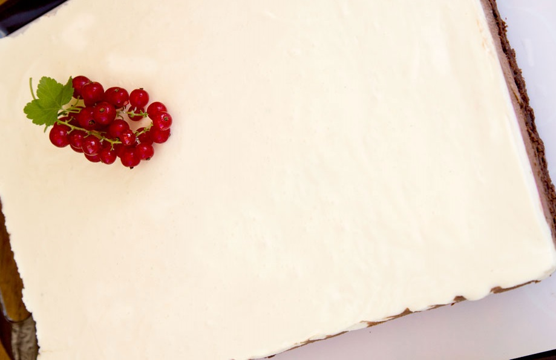
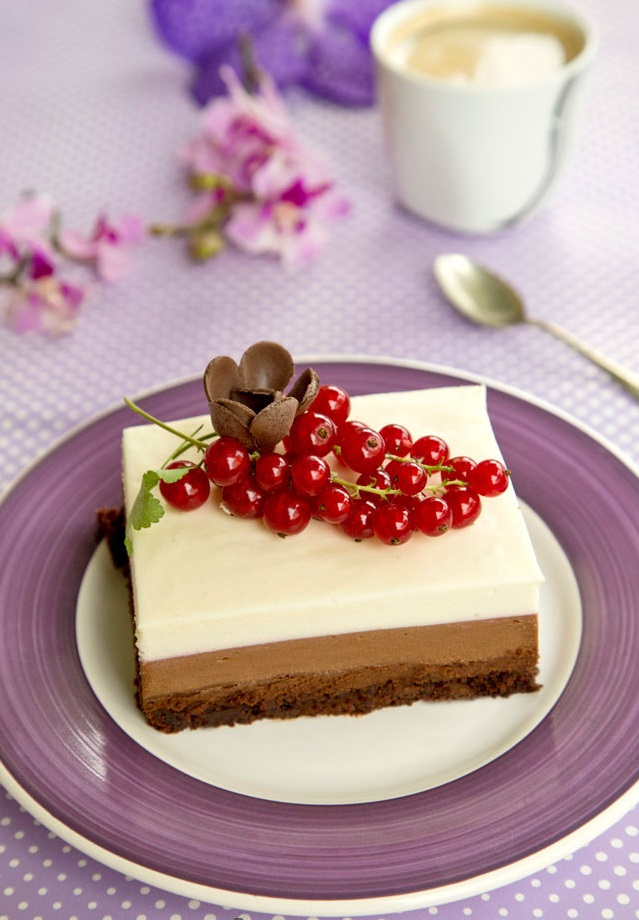

Începem să pregătim blatul. Topim untul și îl lăsăm să se răcească. Amestecăm ingredientele solide (făina, praful de copt, zahărul brun, 1 pachet zahăr vanilat, sare și cacao) într-un castron. Batem un ou, turnăm untul topit și răcit peste ou, apoi adăugăm treptat ingredientele solide. Incorporăm ciocolata topită la bain-marie cu o lingură de lapte, iar la final albusul bătut spumă tare.

Turnăm compoziția în tavă tapetată cu hârtie de copt și îl coacem în cuptorul preîncălzit la 180°C în jur de 15 minute (până trece testul cu scobitoarea).

Începem să pregătim pe rând fiecare cremă de ciocolată. Topim la bain-marie ciocolata neagră cu 3 linguri de lapte, apoi o mixăm cu 150 ml frișcă. Punem foile de gelatină în apă rece pentru 5-7 minute. Încălzim 50 ml friscă lichidă (avem grija să nu ajungem la temperatura de fierbere), punem foile de gelatină în frișca, mixăm rapid și o incorporăm cât putem de rapid în ciocolata neagră, mixând la viteză maximă. Turnăm crema peste blat, nivelăm frumos și o dăm la rece până pregătim următoarea cremă.

Pentru stratul cu ciocolată cu lapte procedăm exact ca mai sus, păstrând 50 ml friscă lichidă pentru a dizolva gelatina. Turnăm ciocolata cu lapte peste ciocolata neagră, nivelăm și dăm iar la rece.

Pentru stratul cu ciocolată albă topim ciocolata albă cu lapte la bain-marie, o luăm de pe foc și adăugăm lichiorul de ciocolată albă și 100 ml frișcă lichidă și mixăm. Foile de gelatină înmuiate în apă le scurgem și le punem în 150 ml frișcă lichidă încălzită până aproape de temperatura de fierbere, apoi încorporăm compoziția în crema de ciocolată. Turnăm și ultimul strat de ciocolată al tortului, nivelăm și dăm la rece.

Îl ținem la rece până în momentul în care îl vom tăia.
